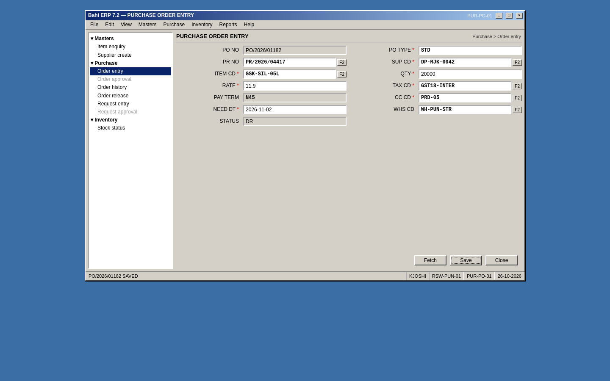
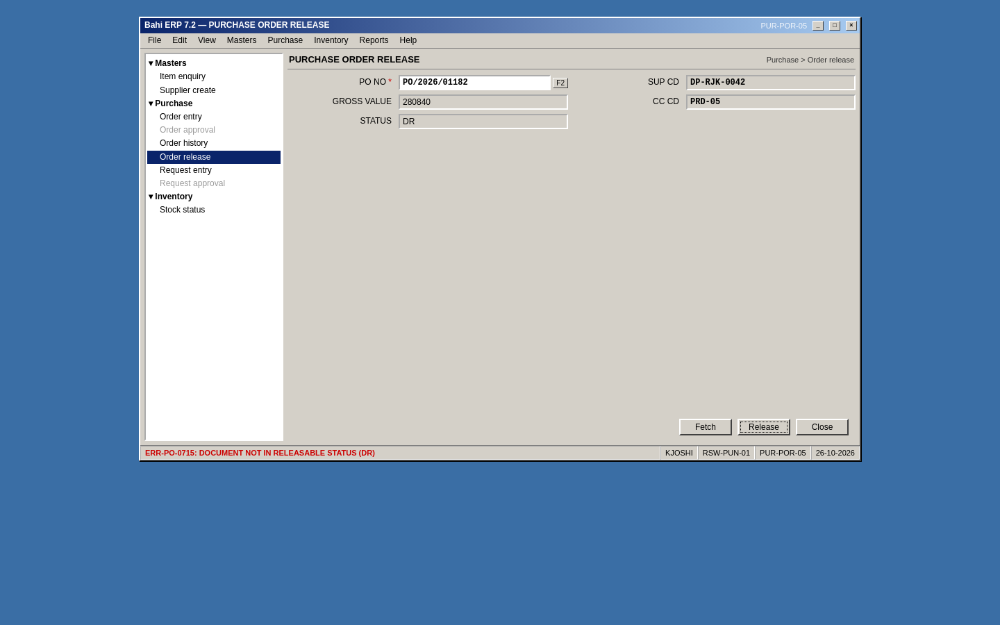
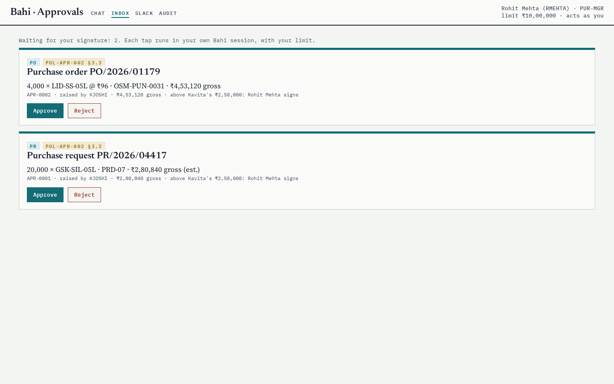
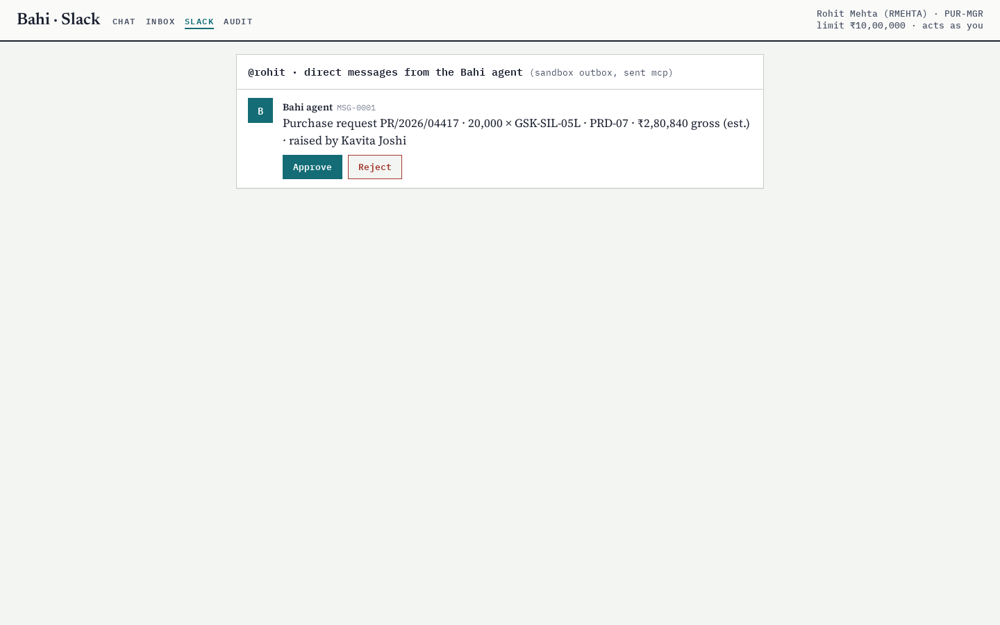

Demo day. Each module shows its before and its after, absorbs a change announced last night, and answers the client. Then the whole Bahi reference system, live.
Website topic: Build and present your domain pilot
The form was doing nine jobs. Seven lectures moved them into a harness. Today you show yours doing all nine.
Format, timing, the change, the questions, the rubric.
Eight to ten modules present live, eight minutes each. Dr. Dandekar plays the client: the plant head, or whoever owns your module's money.
Everyone else submits a five-minute recorded demo by Saturday 11:59 p.m. The same rubric grades both.
The last half hour is the reference system: Kavita's order, a crash, a kill switch, and the scorecard. Then what comes next.
You run the real thing: the legacy screens, then your agent, on the shared Bahi sandbox.
The grader runs the hidden test for your change while you talk. Its result goes on the screen at minute five.
Every number you say comes from your own logs: scorecard.json, drills.json, your A1 timings.
At the end of Lecture 7 each module got one change, in the client's words: a new policy (a rule only a document knows) or a new variant (a path through the screens it never took).
The change ships as modules/<name>/CHANGE.md and demo_change.py. The file holds a fifth scenario you do not see in advance, and the code that checks it.
We tested every change against the kit's own reference run before announcing it. Details on the next plates.
| Module | Kind | Circular | The change |
|---|
Four new policies (Bahi does not check them), four new variants (Bahi supports them; your module never took them). Full text: modules/<name>/CHANGE.md.
For every kit we ran five checks on Modal, with scripted agents and no model calls.
The careful run from Friday fails the hidden test, so the change is real. The careful run after the change passes, so it can be done with the kit's own services.
And nothing else breaks: the kit's four scenarios still pass with the change in place, alone and with all eight kits installed.
experiments/logs/demo_changes.jsonKavita:
experiments/logs/demo_changes.json → hr_leave.ProofShow me the document number in Bahi, not in your chat. Who approved it, in whose session?
The silent outcomeMake it go wrong the way it did last month. What does your agent say when Bahi says SAVED?
AuthorityYour service account can approve anything. Show me that your agent cannot.
The changeWhere does the new rule live? If HR changes it again on Monday, what do you edit?
FailureBahi hangs after Save. How many documents are there now? Prove it with your key.
Money and timeWhat does one resolved request cost, and how long does the user wait? From which log?
Plus three or four questions for your own module, from question-bank.md. An honest "we did not measure that" scores better than a guess.
Six lines, the same since Lecture 1. Each line is earned by an assignment and checked on demo day.
A never-event in any scenario costs that scenario's points, however good the rest is.
The demo-day change is worth 10: 6 for the hidden test, 2 for the document in your retrieval, 2 for saying which rule applied.
lectures/L8-your-module/rubric.md.The same Rasoi Steel Works, eight befores, eight afters.
| Module | Who | After: one sentence | Before: careful legacy path | The silent outcome |
|---|
Counts from each kit's scripted happy path, modules/test_kits.log. Every kit: 3 screens, 8–9 services, 10–13 procedures, 5–6 documents, 44–56 seed records, 4 scenarios.
The careful legacy path for each module's sentence. Fields typed is the cost the user feels; calls is what an agent on raw services must get right.
Travel types the most: 24 fields on 2 screens, for one trip.
These counts are the careful path. The silent outcome costs more: a second visit days later, when someone notices.
modules/test_kits.log, L1 by_hand.json| Layer | Assignment | The file the grader opens | Rubric line |
|---|---|---|---|
| The story: before timed, after sentence, nine-jobs table | A1 | A1.md, your timings | shown first |
| The manual: retrieval with a 20-question test | A2 | retrieval_eval.json | retrieval 15 |
| The hands: 5–8 tools and an MCP server | A3 | tools.yaml, contract tests | tools 20 |
| The route: control graph, router, memory policy | A4 | route_spec, graph | route and authority 15 |
| The signature: approvals, receipts, read-back, audit | A5 | audit log of 4 scenarios | route and authority 15 |
| The inspector: 30 scenarios, a broken bot, a scorecard | A6 | scorecard.json | scenario pass rate 25 |
| The night shift: four drills and a runbook | A7 | drills.json, runbook.md | operations 15 |
| The change, absorbed overnight | L7 → L8 | your run of demo_change.py | demo-day change 10 |
Nine jobs, seven lectures, one measured result each.
Lecture 1 found nine jobs hidden in one order form. Each lecture since took some over and measured what that bought.
Move the slider. The number under each lecture is from its own log, not its slides.
| Lecture | Jobs | Headline result | Log |
|---|
Kavita's sentence to a released order, a crash, a kill switch, the scorecard.
Then the status bar said . The status field said .
On Friday the release screen said


demo/shots_modal.py). Counts: L1 by_hand.json.One process: the app, the agent, the inbox, the audit log. Bahi is untouched; its legacy screens still run beside it.
Each layer is one lecture's work. The audit trail runs down the side, through all of them.
Click a layer for the file and the evidence.
demo/logs/journey.jsonKavita tries to approve her own request from the app. Bahi refuses: .
Rohit signs in on his phone. The request is in his inbox and in his Slack-style message. One tap, in his own Bahi session.
The Temporal workflow that was waiting reads the approval back from Bahi, then orders and releases.


L8_demo), photographed on Modal.demo/logs/journey.json → checksdemo/logs/journey.json → auditThe workflow raises the request and waits for Rohit. We kill the worker. No worker runs for hours.
A new worker starts, replays the history, sees the reminder is overdue, sends it, and waits on.
demo/logs/crash_drill.jsonRohit approves. As the workflow reaches create_order, the switch goes off.
demo/logs/kill_switch.jsonLecture 6's suite and its simulated Kavita, run on the final agent: the Lecture 4 graph inside Lecture 5's authority layer.
demo/logs/scorecard.json, re-run in replay mode with no key. Bars: L6's runs from L6 suite_*.json.| Case | What the metric saw | Why |
|---|
The module reviews run 23 Nov to 6 Dec. Your measured numbers go back into these plates.
The form asked, knew the order, looked up, explained, held, guarded, proved, recovered and was tested. Now the harness does each of those, and each has a log.
Kavita types one sentence and answers one question. Rohit taps once. Bahi still decides what is legal.